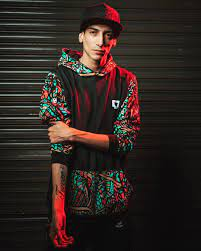

BIOGRAFIA
Ramiro José Verdoljak, más conocido como Stuart, es un freestyler, rapero y MC argentino, originario de Coronda, en la provincia de Santa Fe, Argentina. Es considerado uno de los mejores freestylers y raperos en Argentina, caracterizado por su gran ingenio y respuestas en sus barras.
Es conocido por sus destacables participaciones en competencias como las nacionales argentinas de Red Bull (2018 y 2019), la FMS Argentina, God Level All Stars 2019, entre otras. Campeona en la edición 2020/21 de la FMS Argentina.
